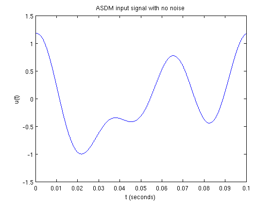
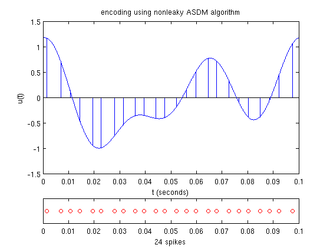
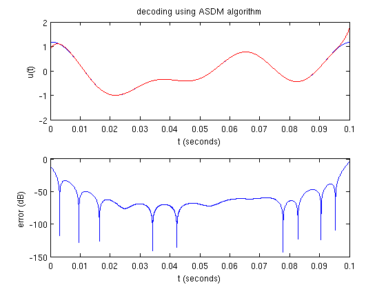
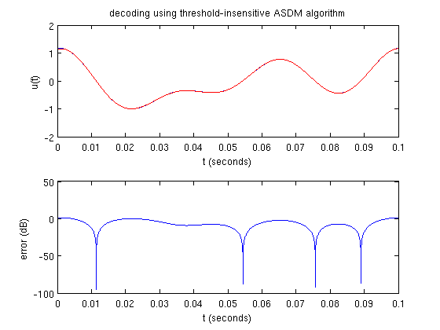
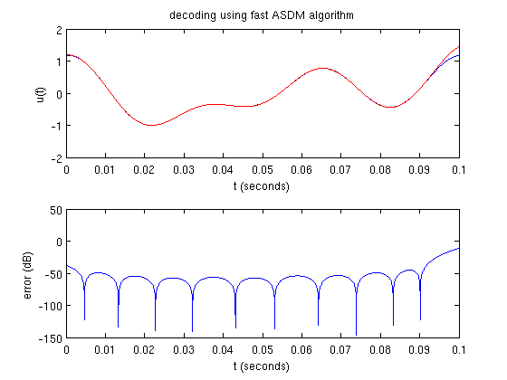

Time Encoding and Decoding with an Asynchronous Sigma-Delta Modulator
This demo illustrates the time encoding and decoding of a bandlimited signal using an asynchronous sigma-delta modulator.
Contents
A Simple Test Signal
Generate a noiseless signal 0.1 s long sampled at 1 GHz containing 3 components no greater than 32 Hz:
dur = 0.1; fs = 1e6; dt = 1/fs; f = 32; bw = 2*pi*f; t = [0:dt:dur]; np = -inf; if np == -inf, fig_title = 'ASDM input signal with no noise'; else fig_title = sprintf('ASDM input signal with %d dB of noise',np); end rand('twister',0); randn('state',0); fprintf(1,'%s\n',fig_title); u = func_timer(@gen_test_signal,dur,dt,f,np); plot_signal(t,u,fig_title);
ASDM input signal with no noise execution time = 0.384 s
Time Encoding
The encoding parameters are validated to ensure that signal recovery will be possible:
b = 3.5; % bias d = 0.7; % threshold k = 0.01; % scaling factor if ~asdm_recoverable(u,bw,b,d,k), return end fig_title = 'encoding using nonleaky ASDM algorithm'; fprintf(1,'%s\n',fig_title); s = func_timer(@asdm_encode,u,dt,b,d,k); plot_encoded(t,u,s,fig_title);
encoding using nonleaky ASDM algorithm execution time = 0.239 s
Time Decoding
The encoded signal can be recovered using one of several different decoding algorithms:
fig_title = 'decoding using ASDM algorithm'; fprintf(1,'%s\n',fig_title); u_rec = func_timer(@asdm_decode,s,dur,dt,bw,b,d,k); plot_compare(t,u,u_rec,fig_title);
decoding using ASDM algorithm execution time = 0.133 s
fig_title = 'decoding using threshold-insensitive ASDM algorithm'; fprintf(1,'%s\n',fig_title); u_rec = func_timer(@asdm_decode_ins,s,dur,dt,bw,b); plot_compare(t,u,u_rec,fig_title);
decoding using threshold-insensitive ASDM algorithm execution time = 0.133 s
M = 5; % fast decoding parameter fig_title = 'decoding using fast ASDM algorithm'; fprintf(1,'%s\n',fig_title); u_rec = func_timer(@asdm_decode_fast,s,dur,dt,bw,M,b,d,k); plot_compare(t,u,u_rec,fig_title);
decoding using fast ASDM algorithm execution time = 0.184 s